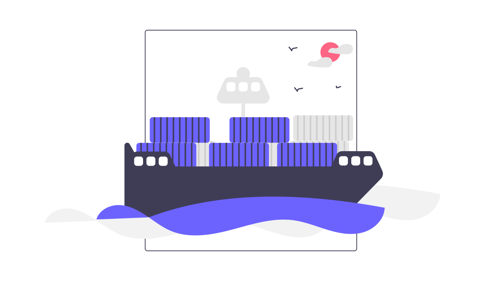

Case Studies
Fashion Retailer
- New leadership team recently installed
- Concerns about the ROI delivered by the digital team
- Changes to products seemed out of line with wider business strategy
- Open questions about the capability of the existing team to communicate a response and turn around performance
- Full review of team capability and digital operations
- Conducted interviews across entire digital team and beyond
- Mapped processes and touch points to show how things worked in practice vs team perception
- Met with third-party providers in development, analytics and optimisation
- Assessed details of external contracts and working practices
- Mapped skills gaps across the team
- Recommended training and education for technology team
- Proposed new hire to bridge a specific skills gap and supported hiring of the role
- Identified key contractual flaws driving undesirable behaviours from third party vendors
- Delivered recommendations for improved communication and ways of working

- £120m turnover
- 1,000+ employees
"This was exactly what we needed. A very clear diagnosis, and well-articulated actions we could immediately apply."
Ground Hazard Risk Assessments
- New Private Equity investor
- Slow speed to market was creating commercial pressures
- Multiple release candidates were buggy and failing
- Questions about capability of the development team and quality of the product produced
- Code review and interview with lead developer
- Assessed code delivery practices and processes
- Met with founders and interrogated business, product & technology strategy
- Identified serious issues in code quality and release processes
- Guided the development team to release a reduced-scope version of the product to customers, securing at risk contracts
- Delivered clear, concise actions to the founders around technical risk reduction and how to predictably deliver
- Aligned commercial side of the business around a coherent strategy
- Supported path to an eventual acquisition

- Private Equity backed startup
- Successful exit 18 months after involvement
"Thank you. While it's concerning to be directly faced with these risks, we can finally see a route to market."
Online Travel Agent
- Private Equity Backed travel group, with multiple brands
- Launched update to website, and mobile SEO immediately began to fail
- Organic traffic reduced ~30% overnight
- Development team continually deploying 'fixes' then rolling back in a trial and error manner
- Full review of data and analytics and code changes to understand scale and cause of the issue
- Idetified root cause of the problem and delivered fast remedial action
- Gave an assessment of the mitigation and recovery aproaches employed by the external development team
- Advised on vendor selection and consequences of technology choices
- Organic traffic immediately beagn to recover, quickly reaching previous benchmarks
- Implemented longer-term fixes and select suitable vendors for future support

- Private Equity backed
- £40m turnover
"Reassuring to know exactly what happened and that we're on track to recover."
Shipping Recruitment Platform
- Initial seed investment runway tightening
- MVP remained stuck in beta, meaning a next funding round was close to impossible
- The product was unstable and full of bugs
- Offshore development team were unresponsive; little confidence in their capability to fix the issues in a reasonable time
- Audited skills and capabilities of the development team and initiated appropriate training
- Initiated a restructure of the code base to reduce risk and improve scalability
- Introduced behavioural analytics and established KPIs for user engagement and data quality
- Led a short series of development cycles to launch the app and embed solid development principles
- Recommended and led recruitment for personnel changes to better position the team for the future
- Successful product launch within tight funding constraints
- Decision-making criteria used to prioritise and allocate resource made visible to investors
- Significant growth of the user base through organic marketing, capturing 10% market share
- New tech lead installed to provide in-house oversight for off-shore, remote developer resource
- Committed the team to regular, straightforward Investor communication, providing a bespoke template for exec reporting

- Seed funded startup
- Funding runway expiring with little chance of a second round
"A unique experience. Nobody has ever challenged us like this before, and we're thinking about how we approach building the product completely differently."
Location Search Platform
- Legacy digital projects were stuck in progress with no path to delivery
- Data management challenges creating operational inefficiencies
- A five-year-old custom CRM project to resolve this had no clear path to launch
- Recommended & implemented tools for capturing data to improve decision-making
- Revamped third-party development practices
- Drove retirement of redundant systems and legacy projects, simplifying workflow and prioritisation
- Overhauled analytics
- Saw significant improvement in time to market for new capabilities
- Long-standing data project successfully launched
- Operations streamlined and costs reduced
- Supported the team to deliver a tailored and predictable roadmap for development
- ...
- ...